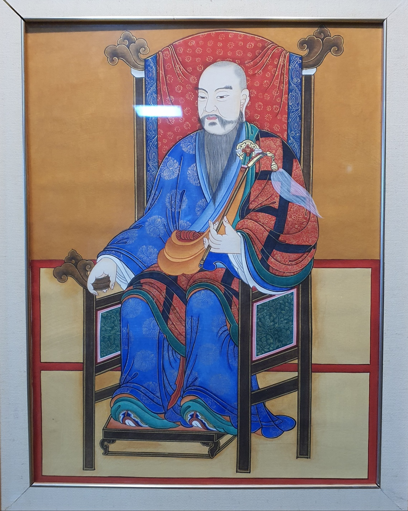
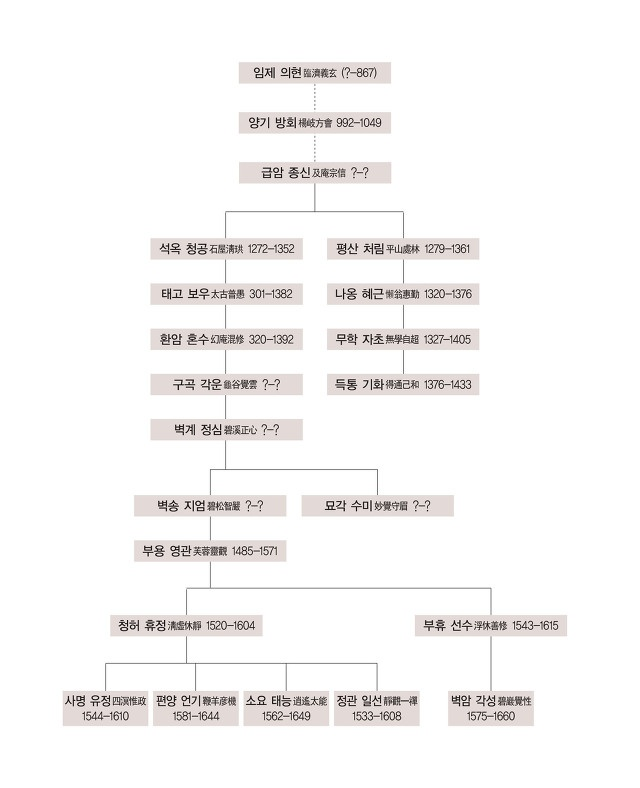
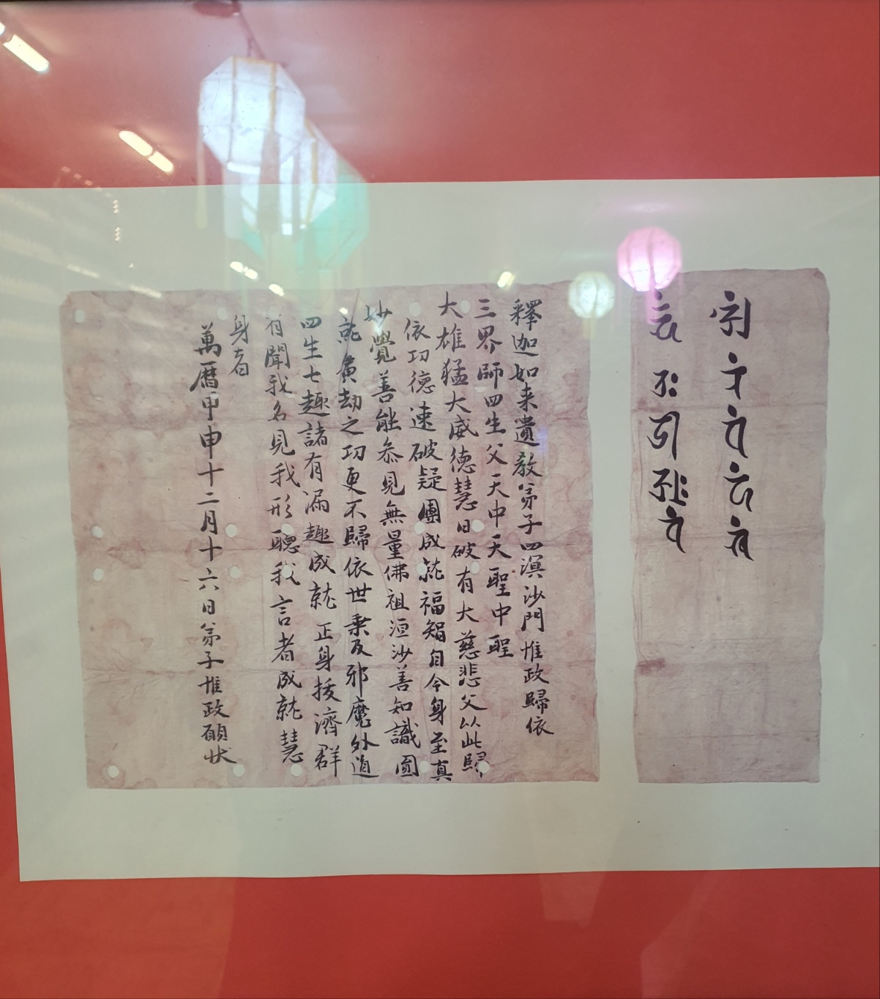

사명당 유정은 서산대사 청허 휴정(淸虛休靜)의 법을 이은 조선 중기의 선승입니다. 나라가 위태로울 때 승병을 일으켜 백성을 지켰고, 전란이 끝난 뒤에는 일본으로 건너가 붙잡혀 간 동포들을 데리고 돌아왔습니다. 대한불교밀인종은 사명당 유정을 종조(宗祖)로 받듭니다.
1544년 경상도 밀양에서 풍천 임씨 임수성의 아들로 태어났습니다. 13세에 황여헌에게 수학하였으나, 일찍 어머니와 아버지를 차례로 여읜 뒤 김천 황악산 직지사로 들어가 신묵(信默) 화상 아래에서 출가하였습니다.
1561년(명종 16) 승과인 선과(禪科)에 급제하여 이름을 알렸고, 1575년(선조 8) 선종의 주지로 추대되었으나 이를 사양하고 묘향산으로 들어가 청허 휴정의 문하에서 선(禪)을 닦았습니다. 이후 옥천산 상동암에서 지는 꽃잎을 보고 세상의 무상함을 깊이 깨달아, 따르던 문도들을 흩어 보내고 홀로 참선에 몰두하였으며, 오대산과 금강산 등지에서 수행을 이어 갔습니다.
1592년(선조 25) 임진왜란이 일어나자 승병을 모아 순안에서 스승 청허 휴정의 휘하에 들어갔고, 노쇠한 스승의 뒤를 이어 승군을 통솔하였습니다. 체찰사 류성룡을 따라 명나라 군대와 함께 평양성 탈환에 힘을 보탰으며, 도원수 권율과 함께 의령 등지에서 전공을 세워 당상관의 품계에 올랐습니다.
1594년에는 적장 가토 기요마사(加藤淸正)의 울산 진중을 세 차례나 찾아가 담판을 벌이며 적의 동정을 살폈습니다. 선조가 환속하여 벼슬길에 나설 것을 권하였으나 끝내 사양하였고, 영남 각지에 산성을 쌓고 군량과 무기를 갖추는 데 힘썼습니다. 1597년 정유재란 때에는 울산왜성 공격에, 1598년에는 순천왜성 전투에 참여하여 공을 세웠습니다.
전란이 끝난 뒤인 1604년(선조 37), 조정의 국서를 받들고 일본으로 건너갔습니다. 교토 후시미성에서 도쿠가와 이에야스와 마주하여 강화를 맺고, 전란 중 붙잡혀 갔던 조선 사람 3,500여 명을 이끌고 이듬해인 1605년에 귀국하였습니다. 칼이 아닌 법(法)과 지혜로 동포를 구한 이 일은 사명당의 생애에서 가장 빛나는 대목으로 꼽힙니다.
만년에는 병을 얻어 가야산 해인사에 머물다가 1610년 음력 8월 26일 결가부좌한 채 입적하였습니다. 나라에서는 자통홍제존자(慈通弘濟尊者)라는 시호를 내렸습니다.
사명당의 법은 임제 의현(臨濟義玄)에서 비롯한 임제종의 정맥이 고려 말 태고 보우를 거쳐 부용 영관, 청허 휴정으로 이어진 흐름 위에 있습니다. 사명당은 편양 언기 · 소요 태능 · 정관 일선과 함께 청허 문하의 대표적인 제자로, 그의 문도는 조선 후기 불교의 큰 줄기를 이루었습니다.

사명당이 직접 쓴 발원문입니다. 첫머리에 「釋迦如來遺敎弟子 四溟沙門 惟政 歸依(석가여래의 유교제자 사명사문 유정은 귀의합니다)」라 적고 삼계의 스승이신 부처님께 귀의하며 공덕을 발원하였으며, 끝에 「萬曆甲申十二月十六日 弟子 惟政 願狀」이라 하여 만력 갑신년(1584) 12월 16일에 썼음을 밝혀 두었습니다.

고향 밀양의 표충사와 묘향산의 수충사에 스승 청허 휴정 등과 함께 모셔져 있으며, 입적한 해인사 홍제암에는 사명대사탑과 석장비(보물)가 남아 그 뜻을 전하고 있습니다.